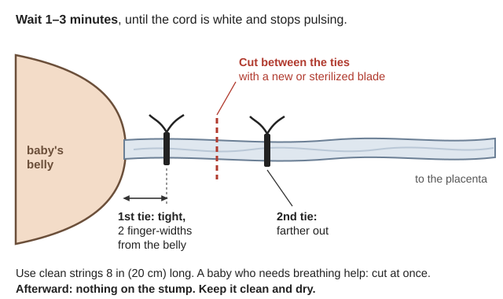
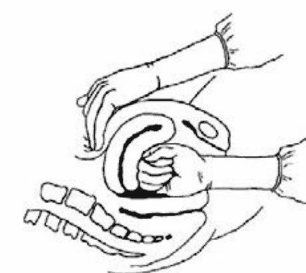
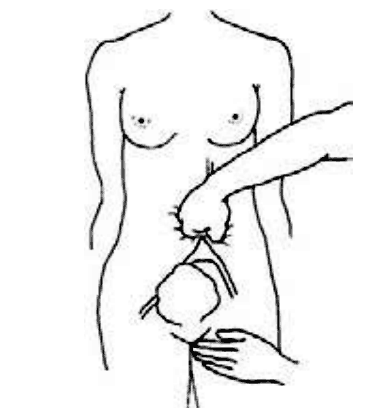
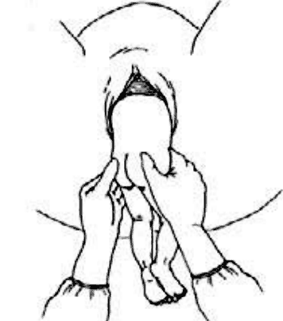
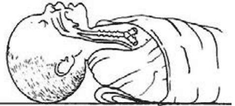
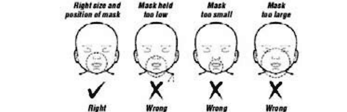
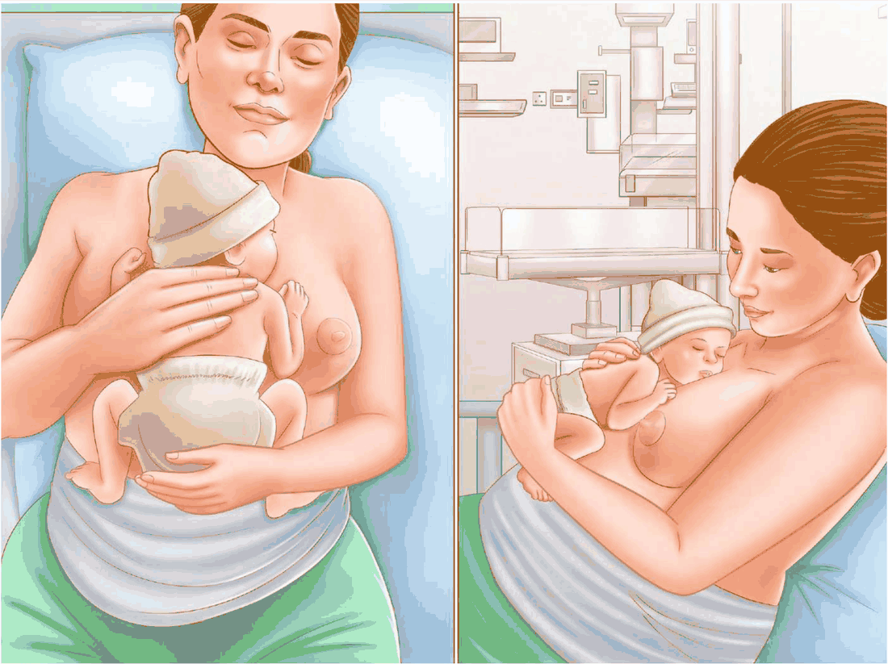
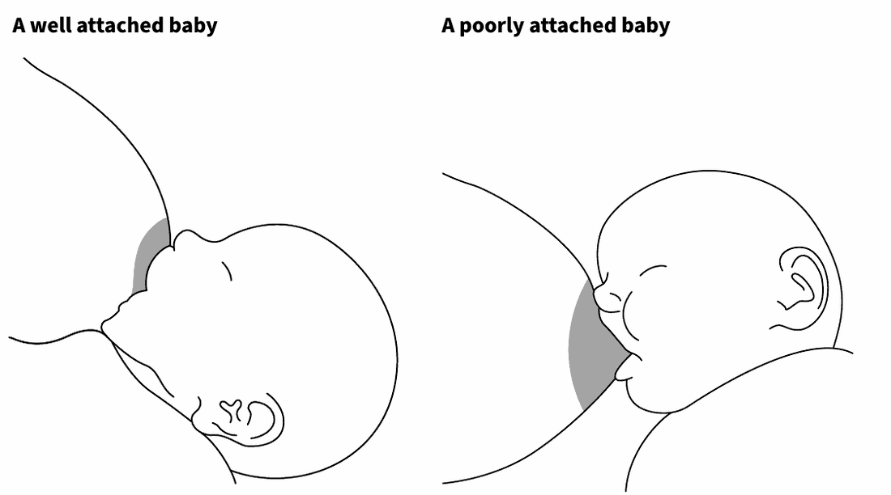

📘 Guides › 🩹 Health & medicine · 🆘 Emergency · 📇 Index A–Z · 💬 Ask
Getting a mother and baby through pregnancy, birth and the first weeks, and keeping young children alive and learning, with no hospital, pharmacy or phone. Current WHO guidance comes first. Hesperian's A Book for Midwives (2026) and Where There Is No Doctor (2025) add detail; where they differ from WHO, this guide gives the WHO answer. The books are in Medical\Childbirth-Children (Birth, Newborn, Mothers, Child-Health), Medical\A Book for Midwives, Medical\Field-Care\Childbirth-Newborn, Medical\Where There Is No Doctor and Southern-Oregon\Children-Learning.
⚠️ Rules that prevent the worst outcomes
- Bleeding after birth kills fastest. Every mother gets a bleeding medicine within 1 minute of the last baby (WHO 2025, p. 19), and someone feels her womb every 15 minutes for the first hour (p. 29).
- Never push on the belly, pull the cord, put anything in the vagina, or give drugs to speed labor (PCPNC, p. 170).
- A baby not breathing by 1 minute needs breaths now, 40 a minute. Stop only after 10 minutes with no heartbeat (PCPNC, p. 152).
- Put nothing on the cord stump. Keep it clean and dry.
- Count a sick child's breaths for a full minute. Fast breathing means pneumonia.
- Never make a child vomit, and never give salt water.
Cheap medicines bought ahead save mothers and children. Most need a US prescription, so talk to a doctor now:
| Medicine | For | Notes |
|---|---|---|
| Misoprostol | Preventing and treating bleeding after birth | No fridge needed; keep dry (WHO, p. 19). Can be handed out before a home birth (BfM, p. 231) |
| Oxytocin | Same; WHO's first choice | Must stay at 36–46 °F (2–8 °C); without cold storage use misoprostol (same page) |
| Tranexamic acid (TXA) | Bleeding that won't stop | 1 g into a vein, only within 3 hours of birth; needs someone who can start an IV (WHO, p. 47) |
| Amoxicillin 250 mg | Child pneumonia; infection after a birth emergency | IMCI, p. 16 |
| ORS packets, zinc, mebendazole, vitamin A | Diarrhea, worms, measles | IMCI, p. 20 |
| Vitamin K 1 mg injection | Every newborn | PCPNC, p. 153 |
Vaccines: bring children up to date on WHO's schedule: hepatitis B within 24 hours of birth; DTP, polio, Hib, pneumococcal and rotavirus; two doses of measles vaccine (WHO Table 2, Dec 2025). A child who fell behind resumes without repeating doses (Table 3). Adults: tetanus boosters, MMR if never vaccinated, and Tdap in every pregnancy (general practice).
Clean birth kit (PCPNC, p. 169; BfM, p. 152; the kit drawn, WTND p. 254): soap and a nail brush, gloves (or very clean plastic bags), a new razor blade, 3 strings 8 in (20 cm) long, a suction bulb (using one, BfM p. 214), many clean cloths, a warm blanket, 3 bowls, plastic for the placenta, clean water and a way to heat it, light, and the bleeding medicine. Add a blood-pressure cuff and stethoscope (how to use them, BfM p. 123), a newborn bag-and-mask (Bag valve mask), a digital thermometer and a hanging scale (general practice).
Transport: there is no 24-hour ER in the Illinois Valley (Start Here). The nearest delivery hospital is in Grants Pass, about 30 miles, an hour or more once roads or fuel fail (general knowledge). Decide now who drives or carries her, and save fuel for it.
📚 Go deeper: WHO Bleeding After Birth — medicines; WHO catch-up table — missed vaccines; A Book for Midwives, ch. 9 — supplies.
Go for help at once, day or night, for bleeding from the vagina, fits, severe headache with blurred vision, fever with weakness, severe belly pain, or fast or difficult breathing (PCPNC, p. 162). She eats more, rests and drinks no alcohol (same page). Smoke harms pregnant women more: in fire season keep her in a "cleaner air room" with a box-fan filter (EPA).
📚 Go deeper: A Book for Midwives, ch. 8 — every prenatal check; PCPNC counselling sheets — birth plans.
Labor has started with painful contractions every 20 minutes or less, waters breaking, or a bloody sticky discharge (PCPNC, p. 162). During labor (WTND, p. 259):
Never: drugs to speed labor (they can kill mother and child — WTND, p. 266), anything in the vagina, pushing on the belly (it can tear the womb — BfM, p. 205), pulling on the cord.
Leave for Grants Pass now if waters broke with no labor after 6 hours, contractions last over 12 hours, she soaks over 2–3 pads in 15 minutes, or the placenta isn't out 1 hour after the baby (PCPNC, p. 170).
Right after the baby is born (a head-first birth, WTND p. 261; Childbirth):

Wait 1–3 minutes, tie twice, cut between the ties (a diagram drawn for this guide).Cord care: clean and dry, nothing on it. Dirt and dung cause tetanus (WTND, p. 263; Neonatal tetanus). WHO's one exception is 7.1% chlorhexidine daily for a week, where a health authority recommends it (PCPNC, p. 169). Fold the diaper below the stump; it usually falls off within 1–3 weeks (sometimes in 5–7 days).
📚 Go deeper: A Book for Midwives, ch. 12 — the birth in drawings; PCPNC home delivery.
Bleeding after birth kills more mothers than anything else (general knowledge), and delay is a common reason they die (WHO, p. 59). A soft womb causes about 70% of it (p. 9).
Feel the womb every 15 minutes for the first hour. Hard like your forehead is good. Soft like the tip of your nose needs rubbing (how to rub it, BfM p. 224). The top should be at or below the navel (WHO, p. 29). Teach the family to check and rub (BfM, p. 236).
Dangerous bleeding: measure, don't guess (WHO, p. 43; p. 15):
Then do ALL of these within 15 minutes, in any order (WHO "MOTIVE", p. 47):
| Step | What to do |
|---|---|
| Massage | Cupped hand on top of the womb; rub in circles until hard. Alone? Massage first |
| Oxytocic | Misoprostol 800 µg under the tongue, or oxytocin 10 units in the thigh. Nauseous? Pills go in the rectum (BfM, p. 231) |
| TXA | 1 g into a vein over 10 minutes, if someone trained and under 3 hours |
| IV fluids | If you can; if not, sips of rehydration drink while awake (BfM, p. 239) |
| Examine | Baby to the breast; help her urinate; placenta whole? torn and bleeding? (BfM, p. 236) |
| Escalate | Head for Grants Pass if bleeding stays heavy or passes 1,000 mL (WHO, p. 57) |
Still bleeding?

Step 1: squeeze the womb between the fist inside and the hand outside, for at least 5 minutes (MCPC, p. 178).
Step 2: press until the pulse in her thigh disappears, and keep pressing (MCPC, p. 179).📚 Go deeper: WHO action plans — the bundle and shock; A Book for Midwives, ch. 13 — the family's part.
Stuck shoulders: the head is born, pulls back like a turtle, and the shoulders won't come. The baby has about 5 minutes before brain damage (BfM, p. 210). Call every helper. WHO's order (MCPC, pp. 243–244):
Hesperian tries hands-and-knees first (BfM, p. 211); use it if WHO's steps fail. Never push on top of the womb: it can burst. Be ready to help the baby breathe.
Breech (bottom first) with no hospital (BfM, pp. 215–217): feet first is the most dangerous kind. No pushing until the cervix is fully open. Hands off: the bottom, belly and legs come on their own, and you never pull on the baby. Wrap the body so it doesn't chill and gasp inside her. A helper presses above the pubic bone to keep the head tucked. Hold the baby by the hips, never the belly (p. 217; "hold the baby at the hips, but do not pull," MCPC p. 378).

Hold the baby at the hips, never the belly, and don't pull (MCPC, p. 378).📚 Go deeper: A Book for Midwives, ch. 12 — each move drawn; WHO Managing Complications — hard births.
Most babies breathe within 1–2 minutes, and drying is often enough. Never hold a baby upside down or slap it (BfM, p. 241). WHO's steps (PCPNC, p. 152; Neonatal resuscitation):

Head only slightly tipped back: a newborn's neck is bent back less than an adult's (MCPC, p. 311).
The mask covers the chin, mouth and nose, but not the eyes (MCPC, p. 313).Alone with a bleeding mother? Baby first, then her medicine and womb check as soon as you can (WHO, p. 17).
📚 Go deeper: PCPNC resuscitation chart; A Book for Midwives, p. 242 — rescue breathing drawn.
Warmth: skin-to-skin, head covered, out of drafts. A baby needs only one more layer than an adult (BfM, p. 240). Watch for overheating in valley summers over 100 °F, and chilling November–March (general knowledge).
Kangaroo care for babies under 2,500 g (5½ lb) or born 3+ weeks early (WHO KMC, p. 10):

Upright, skin to skin between the breasts, head to one side, hips spread; then wrap the cloth high across her chest (WHO KMC guide, p. 31).Newborn danger signs: treat as an emergency (Caring for the Newborn at Home, p. 71):
Newborn antibiotic doses: BfM, p. 279.
📚 Go deeper: WHO Caring for the Newborn at Home — checking each sign; WHO KMC guide — pictures.
Breast milk only for 6 months. Unmodified animal milk is not suitable under 6 months; it can damage the kidneys (WHO IYCF, p. 18). A baby who can't suckle is fed by cup, not bottle (p. 81; cup feeding, p. 86). No breast milk? See the Food Security guide for wet-nurses, relactation and formula.
Enough milk? After day 5: 8–12 feeds a day with visible swallowing, pale urine at least 6 times a day, yellow stools 3+ times a day until 6 weeks, birth weight back by 2 weeks, then 5–7 oz (150–200 g) a week. Few wet diapers or dark urine is a reliable warning (IYCF, pp. 135–136).
Breast problems (good and poor attachment, IYCF p. 42):

Well attached: mouth wide open, lower lip turned out, chin touching the breast, more of the dark skin showing above the mouth than below (IYCF, p. 42).Womb infection (fever 100.4 °F / 38 °C or more, bad-smelling discharge, chills, belly pain, fast pulse) can kill quickly. Antibiotic plan: BfM, p. 271. Check mother and baby within 24 hours, on day 3, on days 7–14 and at 6 weeks (PCPNC, p. 170).
Depression after birth hits 1 in 10 to 1 in 5 mothers, and her baby grows worse too (Thinking Healthy, p. 11):
📚 Go deeper: WHO Infant Feeding (2025) — breastfeeding problems; Thinking Healthy — the sessions.
Danger signs: act now — can't drink or breastfeed, vomits everything, has had fits, very sleepy or can't be woken (IMCI, p. 5), or fever with a stiff neck (p. 8).
Fever is a sign: look for the cause. Give plenty to drink, boiled water for babies (WTND, p. 76). Paracetamol (acetaminophen) every 6 hours for high fever: one 100 mg tablet at 2 months–3 years, 1½ at 3–5 years — with 500 mg tablets, ¼ and ½ (IMCI, p. 17). No aspirin for children.
Pneumonia: count breaths for a full minute, child calm (IMCI, pp. 6, 45):
| Age | Fast breathing |
|---|---|
| Under 2 months | 60 or more |
| 2–12 months | 50 or more |
| 1–5 years | 40 or more |
Fast breathing or chest sucking in means pneumonia: amoxicillin 250 mg twice a day for 5 days — 1 tablet at 2–12 months, 2 at 1–3 years, 3 at 3–5 years (syrup 250 mg/5 ml: 5, 10 or 15 ml) (p. 16).
Diarrhea. Severe dehydration is two or more of: very sleepy or unconscious, sunken eyes, drinks poorly or not at all, a pinch of belly skin taking over 2 seconds to flatten (IMCI, p. 7; the pinch, WTND p. 151; Dehydration).
Measles starts like a cold with red eyes; days later a rash spreads from behind the ears downward (WTND, p. 311). Give vitamin A: 100,000 IU at 6–12 months, 200,000 IU from 1 year (IMCI, p. 20). Clouded eyes or deep mouth sores mean severe measles (p. 8).
Worms: pinworm itches at night. Cut nails short, wash hands and bottoms every morning, treat the whole family (WTND, p. 141). Hookworm enters bare feet (how it spreads, WTND p. 142): latrines and shoes (p. 142). Mebendazole 500 mg once, from age 1, at most every 6 months (IMCI, p. 20). Untreated creek water brings giardia and weeks of diarrhea (general knowledge).
📚 Go deeper: WHO IMCI charts — every decision and dose; WHO Treatment of Diarrhoea — plans A, B, C.
Weigh monthly and plot it on the WHO-standard charts in pounds and inches (boys; girls; Growth chart). A homemade beam scale works (WTND, p. 297; Steelyard balance). A baby whose weight drops across 2 lines is not growing well (IYCF, p. 136).
Arm measurement (MUAC), 6 months–5 years, around the middle of the upper arm (IMCI, p. 10; MUAC): under 11.5 cm, or swelling of both feet (Kwashiorkor), is severe malnutrition; 11.5–12.5 cm is moderate; 12.5 cm or more is OK. Mark a paper strip at 11.5 and 12.5 cm (rule of thumb). Refeeding a severely malnourished child needs care: WHO 1999 and the Food Security guide.
Toddler food and water (WHO, p. 38; p. 46; "five keys to safer food," IYCF p. 56):
📚 Go deeper: WHO Complementary Feeding — first foods; WTND, ch. 21 — growth charts.
Drowning: a small child can drown in a few centimeters of water in a bucket (WHO, p. 78). Empty buckets and tubs; cover wells, cisterns and barrels (p. 86). Here that means rain barrels (Rain barrel), stock tanks, ditches, and the cold, deep pools of the Illinois and Rogue rivers (general knowledge).
Burns: keep babies away from fires and wood stoves; turn pan handles inward. Cool a burn in clean cool water (not ice) up to 20 minutes. Never grease, fat, herbs or dung (WTND, p. 96). Canning kettles and soap-making lye are local hazards; see the Field Care guide.
Poisons: lock up lye, kerosene and lamp oil, rat poison and medicines (iron pills especially), and never store them in drink bottles (WTND, p. 103). Teach children to leave alone western water hemlock by creeks and ditches, "the most poisonous plant in North America" (PNW 109; Cicuta douglasii), and the death cap mushroom (BCCDC; Death cap).
If a child swallows poison (WHO, p. 155):
📚 Go deeper: WHO Child Injury Prevention — what works; WTND first aid.
Babies and toddlers learn through play and talk (WHO/UNICEF cards):
| Age | Play and talk |
|---|---|
| Newborn | Skin-to-skin; look into the baby's eyes and talk |
| 6–9 months | Clean household things to bang and drop (pot and spoon) |
| 9–12 months | Peek-a-boo; hide a toy under a cloth; name things |
| 1–2 years | Stack, fill and empty containers; simple questions |
| 2 years + | Count, name and compare; stories, songs, picture books |
Reading: the McGuffey Primer adds about 6 new words a lesson, by phonics or whole words (Primer), then the First, Second and Third Readers.
Arithmetic: count real beans, corn or pebbles before pictures, then write out the sums to 20 (Ray's Primary). Mental math needs no paper (Intellectual); written math goes on in the Practical, with answers for parents in the Key.
Older children teach younger ones: a 6th-grader working at 4th-grade level can help a 2nd-grader. Train tutors, or they fall back on threats and put-downs (Peer Tutoring, p. 21).
📚 Go deeper: Care for Child Development — if a child seems slow; Key to Ray's — worked answers.
| Old book | What it says | Do this instead |
|---|---|---|
| WTND, p. 103 | Make a poisoned child vomit "with your finger or very salty water" | Never. Salt is on that page's poison list; WHO dropped vomiting (p. 155) |
| WTND, p. 259 | An enema in labor | WHO: no enema (PCPNC, p. 63) |
| WTND, p. 270 | Alcohol on the cord at every diaper change | Dry cord care; only 7.1% chlorhexidine where advised (PCPNC, p. 170) |
| WTND, p. 152 | Home drinks often beat ORS; ORS contains zinc | WHO: home recipes get mixed wrong (p. 13). Stock ORS and zinc tablets |
| WTND, p. 266 | Save bleeding medicine for emergencies | WHO: every mother, within 1 minute (p. 19) |
| BfM, pp. 242–243 | Rescue breaths about 30 a minute; stop after 20 minutes | WHO: 40 a minute; stop at 10 minutes with no heartbeat (PCPNC, p. 152) |
| BfM, p. 279 | Jaundiced baby in direct sun | No direct sun. Feed often; watch palms and soles (IMCI, p. 46) |
| PCPNC, p. 163 | At least 4 prenatal visits | WHO now says 8 (2016; not on the drive). Check monthly, then weekly |
| Ray's Primary, p. 11 | Stop finger-counting | It's a normal step (general practice) |
| Ray's Practical, p. 72 | Mills, eagles, 1877 prices | Skip or update the money problems |
| McGuffey Readers (1909–1920) | 19th-century morals and stereotypes | Read them with the child (general practice) |
📚 Go deeper: PCPNC, p. 170 — WHO's list of harmful birth practices; WHO Child Injury, p. 155 — current poisoning first aid.
Look before you try it. 🖼️ = drawings in the books on this drive; 📷 = photos in the offline Wikipedia.
Pregnancy and getting ready
Labor and birth
Bleeding and hard births
The newborn
Breastfeeding
Sick and growing children